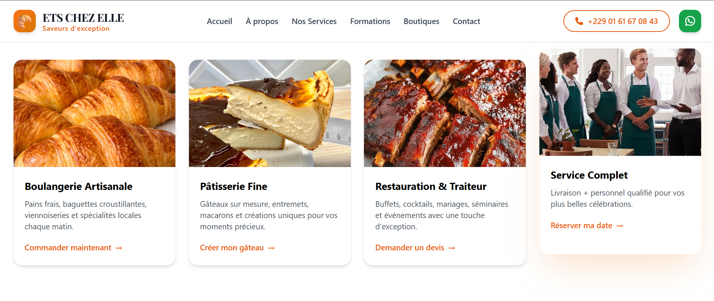
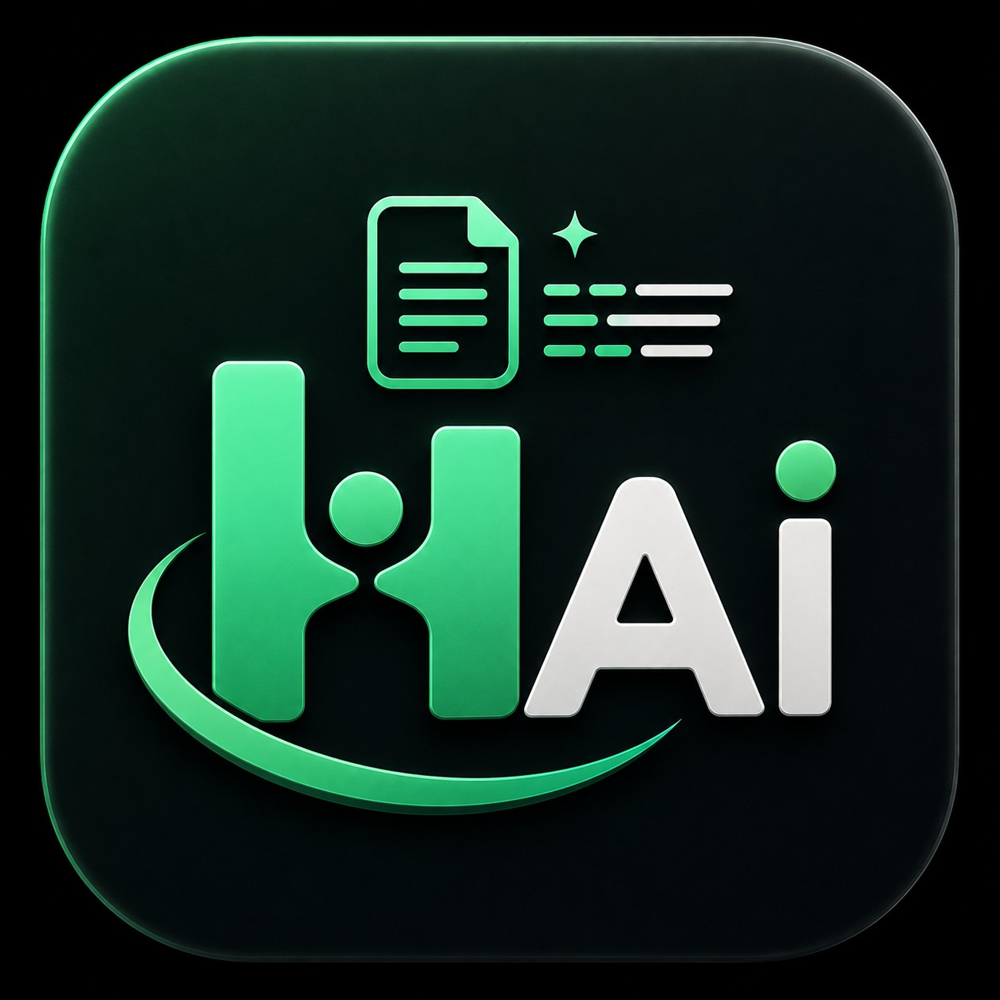

Votre
Expert
Informatique & Réseaux
Développeur web · Administrateur réseau · Technicien PC
Étudiant passionné en Informatique de Gestion,
spécialisation Administration des Réseaux.
Je résous vos problèmes informatiques avec précision.
Passionné,
Rigoureux,
Disponible.
Je suis étudiant en Informatique de Gestion, spécialisé dans l'Administration des Réseaux Informatiques. Ma passion pour l'informatique ne se limite pas aux cours.
Chaque problème informatique est pour moi un défi à relever. J'apporte des solutions rapides, efficaces et durables.
- Intervention rapide
- Tarifs adaptés (particuliers et étudiants)
- Explication claire du diagnostic et des solutions
- Suivi après intervention
Mes
Domaines
de Compétence
Développement Web
Création de sites web et applications web dynamiques.
Administration Réseaux
Configuration et gestion des infrastructures réseau. GNS3, routeurs.
Maintenance PC
Diagnostic hardware complet, démontage, remplacement de composants.
Linux & Systèmes
Administration système, commandes shell, services, automatisation.
Installation OS & Logiciels
Installation de Windows, Linux, drivers, Pack Office.
Programmation
Scripts Python, automatisation, Git.
Ma
Stack
Technique
Linux
Administration complète · Commandes shell avancées · Gestion des processus · Configuration réseau · Scripting bash · Serveurs web Apache/Nginx
Windows
Installation toutes versions · Configuration avancée · Registre système · Active Directory (bases) · Pack Office · Drivers & Optimisation
Mes projets
Découvrez quelques projets sur lesquels j'ai travaillé avec passion.
BIDOSSESSI ENTERPRISE
Création d'un site vitrine moderne et responsive pour une startup de services à Cotonou. Design épuré, optimisation SEO et intégration de formulaire de contact.

ETS CHEZ ELLE
Création d'un site vitrine moderne et responsive pour une entreprise de services de restauration à Cotonou. Design épuré, optimisation SEO et intégration de formulaire de contact.
Technova Learning
Plateforme e-learning interactive dédiée à la formation en ligne, proposant des cours structurés, des quiz et un suivi de progression dynamique.

Humanizer
Outil d'intelligence artificielle conçu pour convertir et humaniser les textes générés par IA afin d'offrir une rédaction fluide, naturelle et authentique.
Viral AI
Application basée sur l'IA permettant de générer des contenus captivants et optimisés pour maximiser la viralité sur les réseaux sociaux.
Ce que je
peux faire
pour vous
Que vous soyez un particulier, une PME ou un étudiant, j'interviens rapidement pour résoudre vos problèmes informatiques avec professionnalisme.
→ Intervention
rapide & efficace
→ Tarifs étudiants abordables
→ Diagnostic gratuit
Réparation & Maintenance PC
Diagnostic complet, identification des pannes matérielles, remplacement de composants, nettoyage et optimisation de votre machine.
Installation de Systèmes d'Exploitation
Installation de Windows (toutes versions) ou Linux, configuration complète, installation des drivers et du Pack Office.
Création de Sites Web
Sites vitrines, applications web, landing pages. Technologies modernes : HTML/CSS, JavaScript, PHP, Bootstrap, Laravel.
Configuration Réseau
Configuration de routeurs, mise en place de réseaux locaux, partage de connexion, sécurisation Wi-Fi et dépannage réseau.
Administration Linux
Installation et configuration de serveurs Linux, gestion des permissions, des services et automatisation par scripts shell.
Assistance & Formation
Formation à l'utilisation des logiciels, Pack Office, initiation à Linux ou au web. Assistance à distance ou en présentiel.
Questions
Fréquentes
Oui, absolument. En tant qu'étudiant moi-même, je propose des tarifs très abordables et adaptés pour les étudiants et les particuliers.
Je prends en charge tous les diagnostics matériels (Hardware) : changement d'écran, clavier, batterie, nettoyage de ventilateur, changement de pâte thermique, ainsi que l'installation de Windows, Linux, et de logiciels bureautiques.
Le délai varie selon le projet. Pour un site vitrine simple (une seule page), cela peut prendre entre 3 et 5 jours. Pour une application web plus complexe avec base de données (Laravel/Node), comptez entre 2 et 5 semaines.
Je configure des réseaux locaux (LAN), le partage de connexion, le Wi-Fi sécurisé, et l'administration de serveurs Linux (Apache, permissions, routage). Je travaille également sur des simulations de topologies réseaux complexes sous GNS3 avec du matériel Cisco.
Pour la maintenance matérielle et le réseau, j'interviens en physique sur Porto-Novo et ses environs. Pour la création web ou l'administration système Linux, nous pouvons collaborer entièrement à distance.
Parlons de votre problème.
Décrivez-moi votre situation et je vous réponds rapidement. Le diagnostic initial est 100% gratuit.